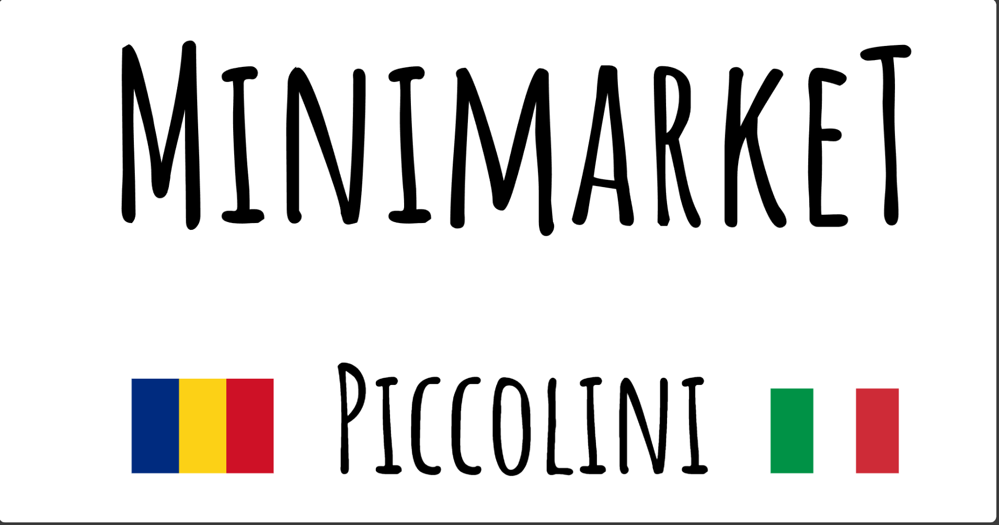

Prodotti Freschi
Frutta e verdura di stagione, latticini freschi e carni confezionate di alta qualità.


Siamo il punto di riferimento per prodotti freschi, articoli di prima necessità; specialità rumene e marocchine . Entra e scopri la comodità sotto casa!
Frutta e verdura di stagione, latticini freschi e carni confezionate di alta qualità.
Pasta, conserve, oli, snack e tutti gli essenziali per la cucina quotidiana.
Acque, bibite, succhi e selezione di superalcolici e birre.
Detergenti, articoli per la pulizia della casa e prodotti per l'igiene personale.
| Giorno | Orario |
|---|---|
| Lunedì - Venerdì | [Caricamento...] |
| Sabato | [Caricamento...] |
| Domenica | [Caricamento...] |
Indirizzo: 14 Via G. Guibert - 10072 Caselle Torinese
Telefono: 012 3456789